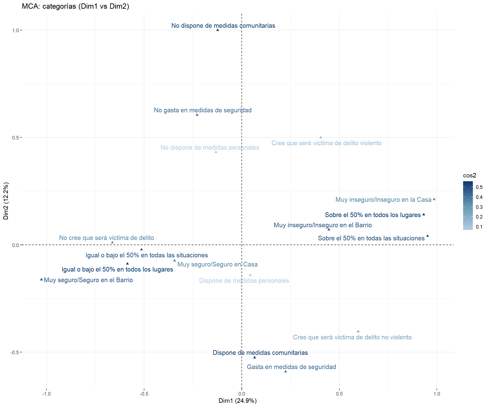
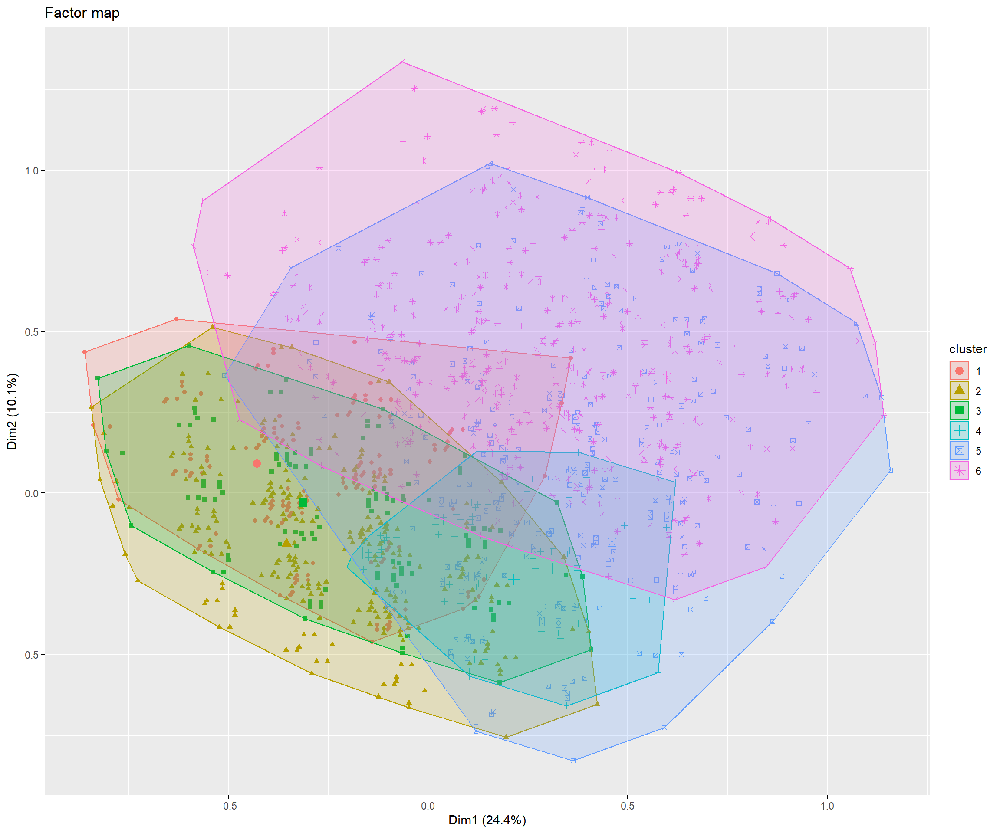
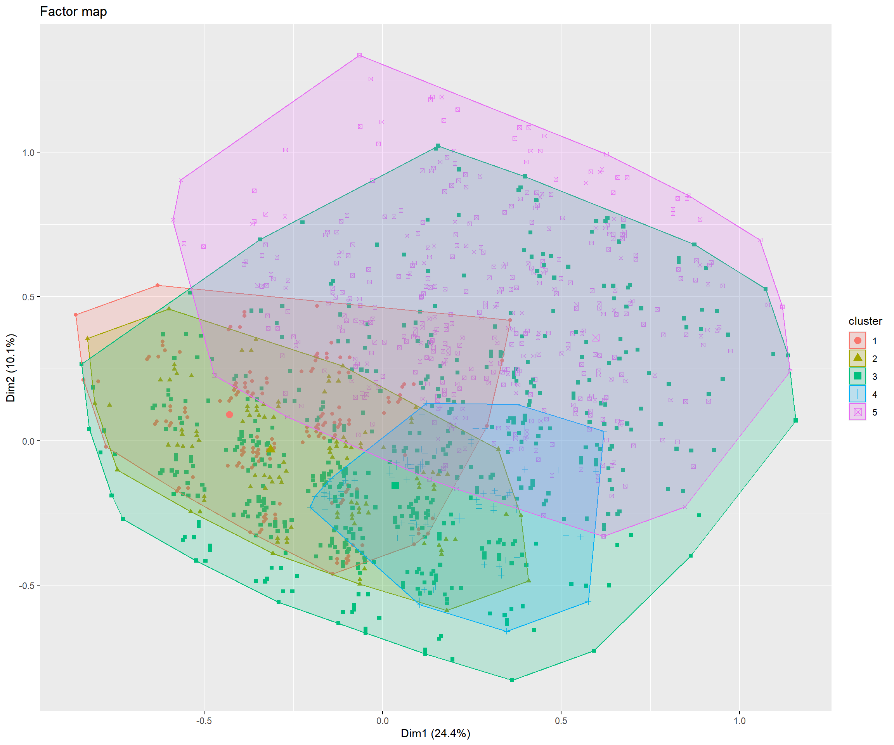
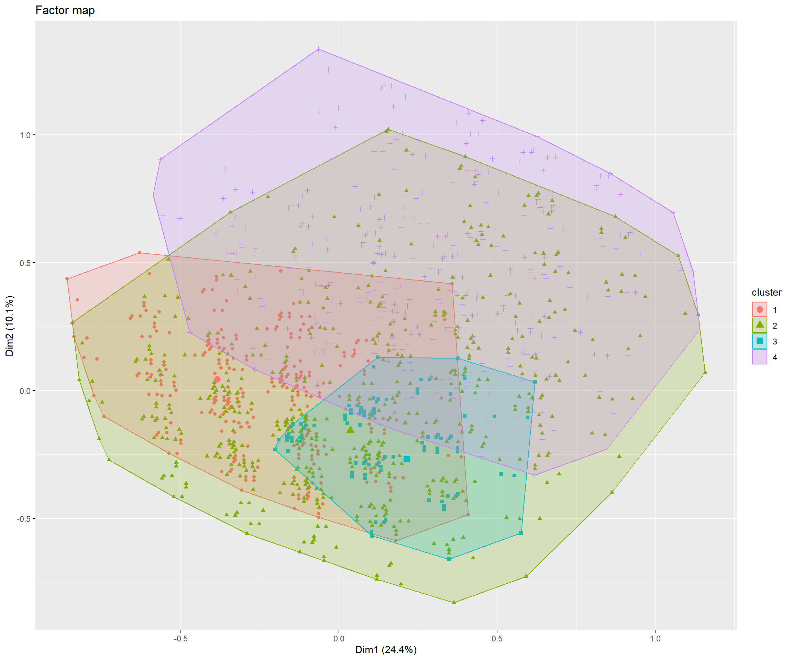
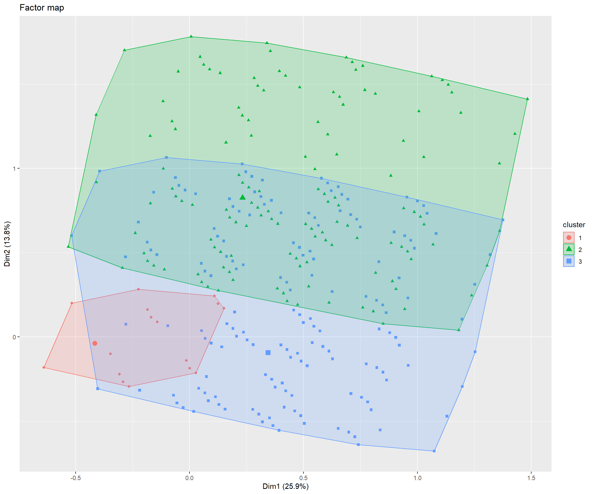
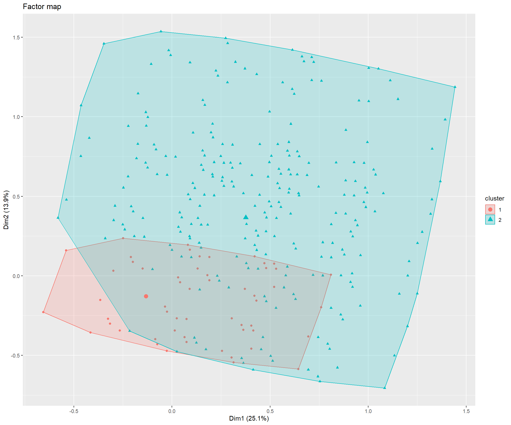

 Análisis MCA y HCPC ENUSC
Análisis MCA y HCPC ENUSC
Introducción
Este documento…
Tablas

El cluster 1 se caracteriza por una sobrerepresentación de: Baja modificación de prácticas (v_test = ); No cree que será victima de delito (v_test = ) and Baja inseguridad en el barrio (v_test = )
El cluster 2 se caracteriza por una sobrerepresentación de: Alta disposición de medidas comunitarias (v_test = ); Baja disposición de medidas vivienda (v_test = 13.98) and Baja de inseguridad en la casa (v_test = 13.38)
El cluster 3 se caracteriza por una sobrerepresentación de: Cree que será victima de delito violento (v_test = ); Baja disposición de medidas comunitarias (v_test = 24.25) and Baja de inseguridad en la casa (v_test = 23.04)
El cluster 4 se caracteriza por una sobrerepresentación de: Alta disposición de medidas vivienda (v_test = ); Gasta en medidas de seguridad (v_test = 17.02) and Alta disposición de medidas comunitarias (v_test = 12.32)
El cluster 5 se caracteriza por una sobrerepresentación de: Cree que será victima de delito no violento (v_test = ); Baja disposición de medidas comunitarias (v_test = 30.58) and Baja disposición de medidas vivienda (v_test = 26.43)
El cluster 6 se caracteriza por una sobrerepresentación de: Alta inseguridad en la casa (v_test = ); Alta inseguridad en el barrio (v_test = 38.17) and Alta inseguridad en espacio publico (v_test = 29.65)

El cluster 1 se caracteriza por una sobrerepresentación de: Baja modificación de prácticas (v_test = ); No cree que será victima de delito (v_test = ) and Baja inseguridad en el barrio (v_test = )
El cluster 2 se caracteriza por una sobrerepresentación de: Alta disposición de medidas comunitarias (v_test = ); Baja disposición de medidas vivienda (v_test = 13.98) and Baja de inseguridad en la casa (v_test = 13.38)
El cluster 3 se caracteriza por una sobrerepresentación de: Baja disposición de medidas comunitarias (v_test = ); Baja disposición de medidas vivienda (v_test = 36.71) and Cree que será victima de delito violento (v_test = 35.69)
El cluster 4 se caracteriza por una sobrerepresentación de: Alta disposición de medidas vivienda (v_test = ); Gasta en medidas de seguridad (v_test = 17.02) and Alta disposición de medidas comunitarias (v_test = 12.32)
El cluster 5 se caracteriza por una sobrerepresentación de: Alta inseguridad en la casa (v_test = ); Alta inseguridad en el barrio (v_test = 38.17) and Alta inseguridad en espacio publico (v_test = 29.65)

El cluster 1 se caracteriza por una sobrerepresentación de: Baja modificación de prácticas (v_test = ); No cree que será victima de delito (v_test = ) and Baja inseguridad en el barrio (v_test = )
El cluster 2 se caracteriza por una sobrerepresentación de: Alta disposición de medidas comunitarias (v_test = ); Alta disposición de medidas vivienda (v_test = ) and Gasta en medidas de seguridad (v_test = 19.95)
El cluster 3 se caracteriza por una sobrerepresentación de: Baja disposición de medidas comunitarias (v_test = ); Baja disposición de medidas vivienda (v_test = 36.71) and Cree que será victima de delito violento (v_test = 35.69)
El cluster 4 se caracteriza por una sobrerepresentación de: Alta inseguridad en la casa (v_test = ); Alta inseguridad en el barrio (v_test = 38.17) and Alta inseguridad en espacio publico (v_test = 29.65)

El cluster 1 se caracteriza por una sobrerepresentación de: Baja disposición de medidas comunitarias (v_test = ); Baja disposición de medidas vivienda (v_test = ) and Baja de inseguridad en la casa (v_test = )
El cluster 2 se caracteriza por una sobrerepresentación de: Alta disposición de medidas comunitarias (v_test = ); Alta disposición de medidas vivienda (v_test = ) and Gasta en medidas de seguridad (v_test = 19.95)
El cluster 3 se caracteriza por una sobrerepresentación de: Alta inseguridad en la casa (v_test = ); Alta inseguridad en el barrio (v_test = 38.17) and Alta inseguridad en espacio publico (v_test = 29.65)

El cluster 1 se caracteriza por una sobrerepresentación de: Baja disposición de medidas comunitarias (v_test = ); Baja disposición de medidas vivienda (v_test = ) and Baja de inseguridad en la casa (v_test = )
El cluster 2 se caracteriza por una sobrerepresentación de: Alta disposición de medidas comunitarias (v_test = ); Alta disposición de medidas vivienda (v_test = ) and Alta inseguridad en la casa (v_test = )